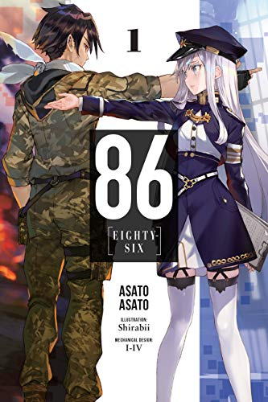

86 -Eighty Six- is an anime adapted from the Light Novel of the same name by Asato Asato that places the main characters in a war for their survival and explores the grim and traumatic nature of war and its consequences. It simultaneously tackles heavy themes of systemic racism and what one does in the face of it, both from the side of the perpetrators and the vicitms.
 About the Author